生存分析处理删失数据，参数模型不适合解释临床试验中观察到的生存期是很常见的。
设 T 表示生存时间，或者到感兴趣事件的时间，我们自然会有 ，它是一个连续的随机变量。假设寿命累积分布为 F ，相关的密度函数为 f 。我们定义进一步分析所需的重要概念。接下来我们将探讨生存函数的概念。
，它是一个连续的随机变量。假设寿命累积分布为 F ，相关的密度函数为 f 。我们定义进一步分析所需的重要概念。接下来我们将探讨生存函数的概念。
假设 T 是一生的连续随机变量，相关的累积分布函数是 F 。在时间 t 的生存函数是观测值在该时间仍然存在的概率，它由下式定义:
生存函数可以采取不同的形式。让我们通过每个分布的一些例子来更清楚地了解生存函数的区别。
指数分布:假设一个电子元器件的寿命分布服从指数分布，速率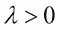。那么，它的密度函数如下:
累积分布函数如下:
指数分布的均值和方差分别为 和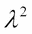。指数分布的生存函数如下:
和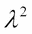。指数分布的生存函数如下:
指数分布的均值为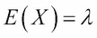。指数分布由单个参数驱动，它还具有一种优雅的性质，即无记忆性质(见第 6 章，Tattar 等人(2016))。
伽玛分布:我们说寿命随机变量遵循一个伽玛分布，其速率 和形状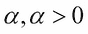，如果它的概率密度函数
和形状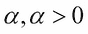，如果它的概率密度函数f具有如下形式:
伽马分布的均值和方差分别为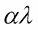和 。不存在累积分布函数的封闭形式，因此也不存在生存函数。
。不存在累积分布函数的封闭形式，因此也不存在生存函数。
威布尔分布:如果一个寿命随机变量的概率密度函数f具有以下形式，则称该变量遵循具有速率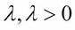和形状 的威布尔分布:
的威布尔分布:
威布尔分布的累积分布函数如下所示:
生存函数如下:
接下来，我们将定义危险率的概念，它也被称为瞬时故障率。
设 T 表示寿命随机变量， F 表示相关的累积分布函数，则t时刻的危险率定义如下:
估计危险率的问题和密度函数的问题一样困难，因此累积函数的概念将是有用的。
设 T 表示寿命随机变量，而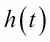是相关的风险率，则累积风险函数定义如下:
这三个量之间存在以下关系:
期望值与生存函数的关系如下:
在下一个 R 程序中，我们将可视化三个概率分布的三个生存量。首先，我们将使用 par 和mfrow功能为九个图设置一个图形设备。该程序是为指数分布解释的。考虑时间段 0-100，在程序中创建一个数字对象Time。我们将从使用时间对象的dexp函数计算密度函数值开始。这意味着dexp(Time)将为 0-100 之间的每个点计算密度函数 f(t) 的值。由于生存函数通过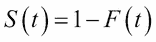与累积分布相关，并且pexp给出了在时间点 t 的 F 的值，指数分布的生存函数计算为 1-pexp() 。危险率、密度函数和生存函数通过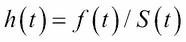联系起来，可以很容易地获得。累积风险函数通过使用生存函数值和以下关系式获得:
然后，对伽玛和威布尔分布重复该程序，并更改相应的参数规格，如以下代码所示:
> par(mfrow=c(3,3))
> Time <- seq(0,100,1)
> lambda <- 1/20
> expdens <- dexp(Time,rate=lambda)
> expsurv <- 1-pexp(Time,rate=lambda)
> exphaz <- expdens/expsurv
> expcumhaz <- -log(expsurv)
> plot(Time,exphaz,"l",xlab="Time",ylab="Hazard Rate",ylim=c(0,0.1))
> plot(Time,expcumhaz,"l",xlab="Time",ylab="Cumulative Hazard Function")
> mtext("Exponential Distribution")
> plot(Time,expsurv,"l",xlab="Time",ylab="Survival Function")
>
> # Gamma Distribution
> lambda <- 1/10; k <- 2
> gammadens <- dgamma(Time,rate=lambda,shape=k)
> gammasurv <- 1-pgamma(Time,rate=lambda,shape=k)
> gammahaz <- gammadens/gammasurv
> gammacumhaz <- -log(gammasurv)
> plot(Time,gammahaz,"l",xlab="Time",ylab="Hazard Rate")
> plot(Time,gammacumhaz,"l",xlab="Time",ylab="Cumulative Hazard Function")
> mtext("Gamma Distribution")
> plot(Time,gammasurv,"l",xlab="Time",ylab="Survival Function")
>
> # Weibull Distribution
> lambda <- 25; k <- 2
> Weibulldens <- dweibull(Time,scale=lambda,shape=k)
> Weibullsurv <- 1-pweibull(Time,scale=lambda,shape=k)
> Weibullhaz <- Weibulldens/Weibullsurv
> Weibullcumhaz <- -log(Weibullsurv)
> plot(Time,Weibullhaz,"l",xlab="Time",ylab="Hazard Rate")
> plot(Time,Weibullcumhaz,"l",xlab="Time",ylab="Cumulative Hazard Function")
> mtext("Weibull Distribution")
> plot(Time,Weibullsurv,"l",xlab="Time",ylab="Survival Function")图 1:指数、伽玛和威布尔分布的风险率、累积风险函数和生存函数
对不同的参数值重复前面的程序，并准备一份风险函数、累积风险函数和生存函数变化的观察总结。分别总结你对指数分布、伽玛分布和威布尔分布的观察。
现在，我们需要看看模型与pbc数据集的吻合程度。这里，我们将指数分布、伽玛分布和威布尔分布拟合到pbc数据集中感兴趣的寿命。请注意，由于我们有经过审查的数据，不完整的观察值不能简单地丢弃，因为 418 个中有 257 个是不完整的观察值。虽然我们不能深入到生存数据的最大似然估计的数学中，但在这里重要的是要注意，一个完整的观察对似然的贡献是 f(t) ，如果它是不完整的/删截的，它是 S(t) 。因此，软件知道哪个观察是完整的，哪个是不完整的是很重要的。这里我们将使用survival包中的Surv函数来指定它，然后使用flexsurv包中的flexsurvreg函数来拟合一个合适的寿命分布。dist选项有助于设置适当的分布，如以下程序所示:
> pbc <- survival::pbc
> Surv(pbc$time,pbc$status==2)
[1] 400 4500+ 1012 1925 1504+ 2503 1832+ 2466 2400 51 3762
[12] 304 3577+ 1217 3584 3672+ 769 131 4232+ 1356 3445+ 673
[397] 1328+ 1375+ 1260+ 1223+ 935 943+ 1141+ 1092+ 1150+ 703 1129+
[408] 1086+ 1067+ 1072+ 1119+ 1097+ 989+ 681 1103+ 1055+ 691+ 976+
> pbc_exp <- flexsurvreg(Surv(time,status==2)~1,data=pbc,dist="exponential")
> pbc_exp
Call:
flexsurvreg(formula = Surv(time, status == 2) ~ 1, data = pbc,
dist = "exponential")
Estimates:
est L95% U95% se
rate 2.01e-04 1.72e-04 2.34e-04 1.58e-05
N = 418, Events: 161, Censored: 257
Total time at risk: 801633
Log-likelihood = -1531.593, df = 1
AIC = 3065.187
> windows(height=100,width=100)
> plot(pbc_exp,ylim=c(0,1),col="black")
> pbc_gamma <- flexsurvreg(Surv(time,status==2)~1,data=pbc,dist="gamma")
> pbc_gamma
Call:
flexsurvreg(formula = Surv(time, status == 2) ~ 1, data = pbc,
dist = "gamma")
Estimates:
est L95% U95% se
shape 1.10e+00 9.21e-01 1.30e+00 9.68e-02
rate 2.33e-04 1.70e-04 3.21e-04 3.78e-05
N = 418, Events: 161, Censored: 257
Total time at risk: 801633
Log-likelihood = -1531.074, df = 2
AIC = 3066.147
> plot(pbc_gamma,col="blue",add=TRUE)
> pbc_Weibull <- flexsurvreg(Surv(time,status==2)~1,data=pbc,dist="weibull")
> pbc_Weibull
Call:
flexsurvreg(formula = Surv(time, status == 2) ~ 1, data = pbc,
dist = "weibull")
Estimates:
est L95% U95% se
shape 1.08e+00 9.42e-01 1.24e+00 7.48e-02
scale 4.71e+03 3.96e+03 5.59e+03 4.13e+02
N = 418, Events: 161, Censored: 257
Total time at risk: 801633
Log-likelihood = -1531.017, df = 2
AIC = 3066.035
> plot(pbc_Weibull,col="orange",add=TRUE)
> legend(3000,1,c("Exponential","Gamma","Weibull"),
+ col=c("black","blue","orange"),merge=TRUE,lty=2)图 2:拟合截尾数据的指数、伽玛和威布尔分布
拟合指数模型的 AIC 值是 3065.187，拟合伽马模型是 3066.147，威布尔模型是 3066.035。标准越低越好。因此，根据 AIC 标准，指数是最合适的。然后是威布尔和伽玛分布。与更复杂的伽玛和威布尔模型相比，单参数指数分布更适合这里。
现在需要对 R 程序进行一些解释。因为 R 包randomForestSRC也有一个同名的数据集，而且版本略有不同，所以用survival::pbc加载了pbc数据集。因此，survival::pbc代码确保我们像在早期实例中一样继续加载pbc数据集。我们感兴趣的事件由status==2和Surv(pbc$time,pbc$status==2)表示，这创建了一个 survival 对象，它具有数字对象中提到的完整观察。如果status是除2之外的任何东西，则观察被审查，这由数字后跟+符号表示。Surv(time,status==2)~1代码创建了必要的公式，这对应用生存函数很有用。dist="exponential"选项确保生存数据符合指数分布。当拟合模型pbc_exp在控制台上运行时，我们得到拟合模型的摘要，它返回模型参数的估计值、95%置信区间和参数估计值的标准误差。我们还得到了完整和删失观察的计数、所有患者的总风险时间、似然函数值和 AIC。请注意自由度在三种拟合分布中是如何变化的。
这里详述的参数模型给出了生存概念的概念。当我们没有足够的证据来构建参数模型时，我们求助于非参数和半参数模型来进行统计推断。在下一节中，我们将继续分析pbc数据。
 中有一个 n IID 生命期随机变量的随机样本，我们知道感兴趣的事件可能已经发生或者将在未来某个时候发生。附加信息由克罗内克指示器变量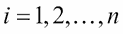捕获:
中有一个 n IID 生命期随机变量的随机样本，我们知道感兴趣的事件可能已经发生或者将在未来某个时候发生。附加信息由克罗内克指示器变量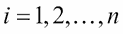捕获: s，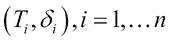中有 n 对随机观测值。为了获得累积风险函数和生存函数的估计，我们需要一个附加的符号。让
s，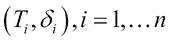中有 n 对随机观测值。为了获得累积风险函数和生存函数的估计，我们需要一个附加的符号。让 表示感兴趣的事件被观察的 Ts 的唯一时间。接下来，我们用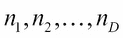来表示在时刻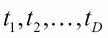之前处于危险中的观察值的数量，用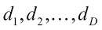来表示在该时刻发生的事件的数量。使用这些量，我们现在建议使用以下公式估算累积风险函数:
表示感兴趣的事件被观察的 Ts 的唯一时间。接下来，我们用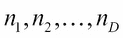来表示在时刻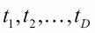之前处于危险中的观察值的数量，用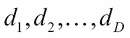来表示在该时刻发生的事件的数量。使用这些量，我们现在建议使用以下公式估算累积风险函数: 是众所周知的卡普兰-迈耶估计量。通过应用泛函 delta 定理，Nelson-Aalen 估计量的性质被带到了 Kaplan-Meier 估计量中。应该注意的是，卡普兰-迈耶估计
是众所周知的卡普兰-迈耶估计量。通过应用泛函 delta 定理，Nelson-Aalen 估计量的性质被带到了 Kaplan-Meier 估计量中。应该注意的是，卡普兰-迈耶估计 为协变量向量，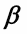为回归系数向量，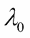为基线危险率。特别感兴趣的相对风险模型如下:
为协变量向量，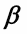为回归系数向量，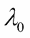为基线危险率。特别感兴趣的相对风险模型如下:
 。
。 是完全未指定的。Cox (1972)提出了这个模型，它是统计学中最重要的模型之一。基线风险函数
是完全未指定的。Cox (1972)提出了这个模型，它是统计学中最重要的模型之一。基线风险函数 的唯一要求是它必须是非负的，并且与之相关的概率分布必须是适当的概率分布。在该模型中，回归系数向量
的唯一要求是它必须是非负的，并且与之相关的概率分布必须是适当的概率分布。在该模型中，回归系数向量 通过将基线风险函数视为有害因素来估计。它的推论是基于
通过将基线风险函数视为有害因素来估计。它的推论是基于